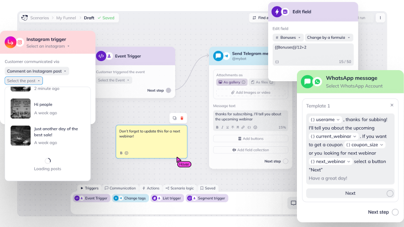

Unisender
2021 – Present, Marketing Tech · email & messaging automation

About
Some products grow by accretion — a channel here, a setting there, a permission level somebody asked for. Unisender needed someone to turn that surface into one orchestration layer, not another toolbar feature. I owned the canvas IA, block interaction model, and launch-line guardrail strategy — frictionless while you build, constraints only at go-live. What I brought in was calling load-bearing decisions early so backend wasn't redesigning validation twice, and whiteboard primitives where the work felt like planning. Find-and-replace looked like a sharing tool on paper; on a call I can walk through what it became.
There is more to tell
On a call I can walk you through:
- Full Figma flow across the canvas, channel blocks, and how modules plug in
- The trade-off of keeping the editor frictionless and pushing every hard check to launch
- Find-and-replace — built for template sharing, adopted for something else entirely
- Challenging API, push, SMS channels
If your team is building a B2B product with challenging constraints, let's talk.
,-. _,---._ __ / \ / ) .-' `./ / \ ( ( ,' `/ /| \ `-" \'\ / | `. , \ \ / | /`. ,'-`----Y | ( ; | ' | ,-. ,-' | / | | ( | | / ) | \ `.___________|/ `--' `--'